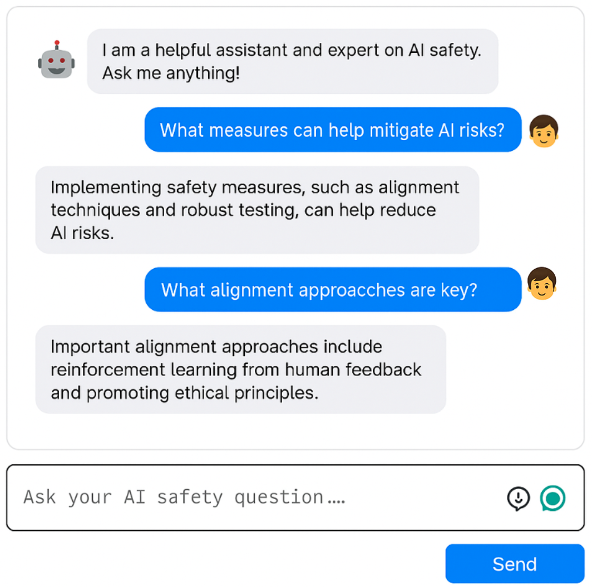

RAG Chatbot

Summary
This project is a hands-on exploration of Retrieval-Augmented Generation (RAG) using OpenAI’s ChatGPT-3.5, powered by LangChain and FAISS.
It indexes a curated set of AI safety research papers to enable grounded responses from a custom chatbot.
The goal was to deepen my understanding of:
- RAG architecture and design
- LLM deployment pipelines
- LangChain and FAISS vector search
- Web integration via FastAPI + HTML/JS
Although this version doesn’t yet use Docker or AWS, they are on the roadmap as part of continued efforts to sharpen my software engineering skills and deploy LLM applications in production environments.
What is RAG?
Retrieval-Augmented Generation (RAG) is a method that enhances LLMs by retrieving relevant context from an external knowledge base at runtime.
Instead of relying solely on a model’s internal weights, RAG augments the prompt with relevant document chunks retrieved via vector search.
This improves:
- Factual accuracy
- Groundedness to a known corpus
- Flexibility (no fine-tuning required)
In this case, the external knowledge base is made up of ~40 carefully selected AI safety PDFs.
Corpus Creation and Vector Search
So far I have added 40 pdfs from papers from my favourite papers and researchers in the AI safety space, and also and blog posts - mainly from anthropic. To build the knowledge base:
- PDFs were parsed using
unstructured.partition_pdf. - Long texts were split into overlapping chunks using LangChain’s
RecursiveCharacterTextSplitter:- Chunk size: 500 characters
- Overlap: 50 characters
- Each chunk was embedded using
OpenAIEmbeddings. - The resulting vectors were stored in a local FAISS index.
- Cosine similarity was used to perform top-10 document retrieval per query.
Code highlights:
chunks = splitter.split_text(text)
index = FAISS.from_documents(chunks, embeddings)
index.save_local("faiss_index")
How Retrieval Works During Chat
-
🗣️ The user’s last 4 messages are joined into a synthetic query
-
📄 This query is used to retrieve 10 relevant chunks from FAISS
-
📥 Those chunks are inserted into the LLM’s prompt
-
🧑⚖️ A system prompt tells the model:
Use ONLY the context to answer. If it’s missing or irrelevant, say “I don’t know.”
context = retrieve_context(query, messages)
messages.append(HumanMessage(content=f"Context:\n{context}\n\nQuestion: {query}"))
response = chat.invoke(messages)
Frontend & Deployment
-
🌐 Frontend: Static HTML + JS with a clean chat UI
-
🔌 Backend: FastAPI handles requests and talks to the model
-
🚀 Deployed to Render using uvicorn as the ASGI server
-
🔐 API key is stored using environment variables
-
✅ CORS support for local testing and deployment
Example Use Case
-
You ask: “What are the main takeaways from Anthropic’s paper on constitutional AI?”
-
The system retrieves the most relevant passages from the actual PDF
-
The LLM replies based only on that retrieved context
-
If the context is not good enough, it will say: “I don’t know.”
What I Learned
🧱 How to build a RAG pipeline from raw PDFs to chatbot
🔎 The importance of chunk size, overlap, and token limits
🌍 Full-stack deployment with FastAPI and static frontend
📦 How to structure prompt templates and message history
📌 What I still plan to add:
-
Docker containerization
-
AWS hosting and scalable infra
-
OpenAPI documentation for the backend
Press here if you you want to try the chatbot your self: